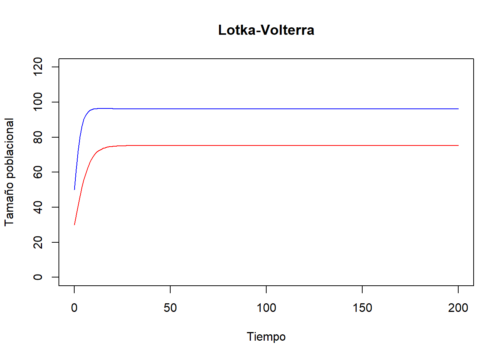
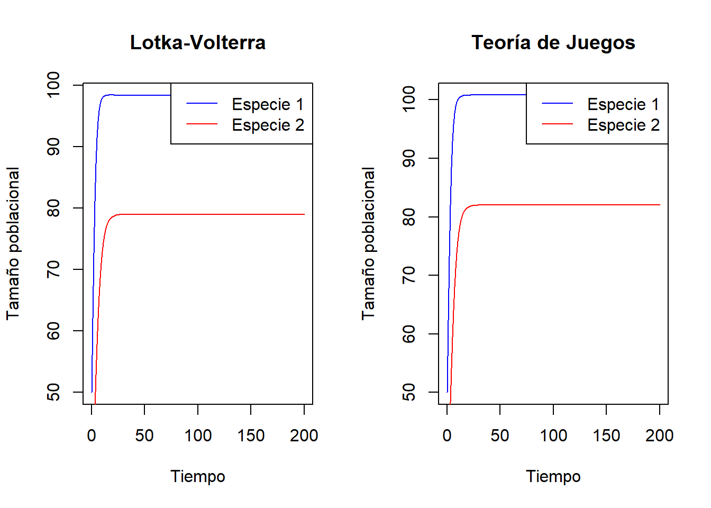
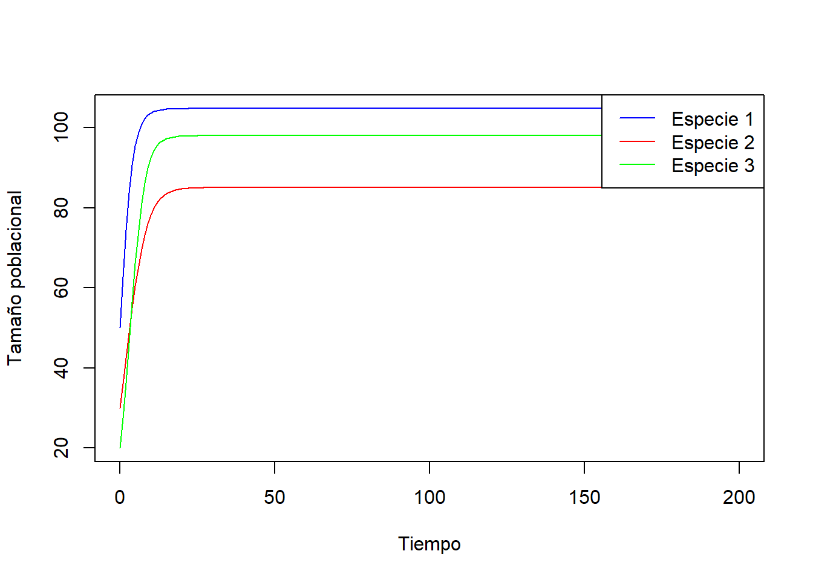
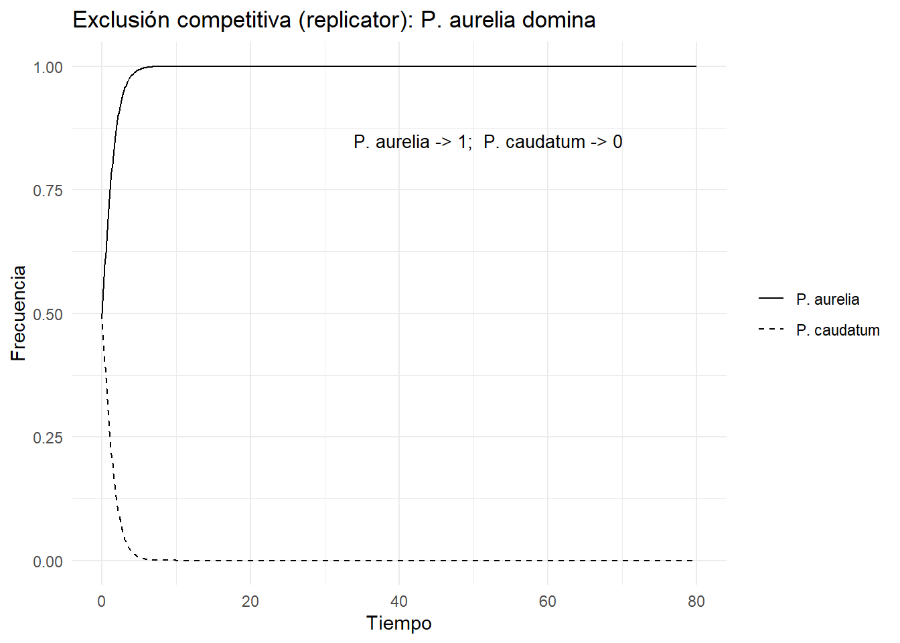
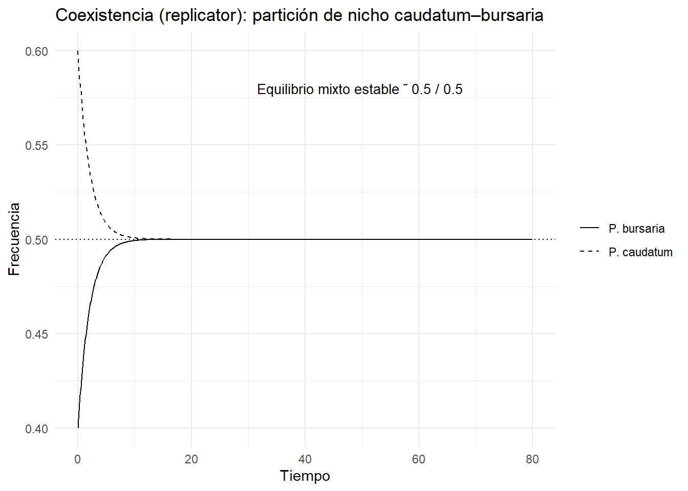

4 Capítulo 4: El modelo Lotka-Volterra. Competencia entre Especies
La competencia entre especies es una de las interacciones ecológicas más estudiadas, ya que juega un papel crucial en la estructura y dinámica de las comunidades biológicas. Ocurre cuando dos o más especies utilizan un mismo recurso limitado, como alimento, espacio o nutrientes, y esta interacción puede afectar negativamente el crecimiento, supervivencia y reproducción de las especies involucradas.
Existen diversos enfoques teóricos para estudiar la competencia. Los modelos clásicos, como los de Lotka-Volterra, describen la dinámica poblacional basada en ecuaciones diferenciales. Por otro lado, la Teoría de Juegos permite analizar estrategias óptimas cuando las especies compiten activamente por recursos, integrando conceptos de comportamiento estratégico.
4.1 Teoría clásica: Modelos de Lotka-Volterra
Las interacciones entre especies han sido ampliamente estudiadas en ecología mediante los modelos de Lotka-Volterra. Estos modelos describen cómo dos especies coexisten o compiten por recursos limitados y cómo sus densidades poblacionales cambian en el tiempo.
La formulación clásica del modelo de competencia interespecífica, expresada utilizando la capacidad de carga, es la siguiente:
\[\frac{dN_1}{dt} = r_1 N_1 \left( 1 - \frac{N_1 + \alpha N_2}{K_1} \right)\] \[\frac{dN_2}{dt} = r_2 N_2 \left( 1 - \frac{N_2 + \beta N_1}{K_2} \right)\]
donde:
- \(N_1\) y \(N_2\): Tamaño poblacional de las especies 1 y 2.
- \(r_1\) y \(r_2\): Tasas intrínsecas de crecimiento de las especies 1 y
- \(K_1\) y \(K_2\): Capacidades de carga para las especies 1 y 2.
- \(\alpha\) y \(\beta\): Coeficientes de competencia que reflejan el impacto de una especie sobre la otra.
Estos modelos permiten analizar diferentes resultados de la competencia, como la coexistencia, la exclusión competitiva o un equilibrio inestable.
| Tipo de Relación | Alfa \(\\a_{12}\) | Beta \(\\a_{21}\) |
|---|---|---|
| Mutualismo | negativo | negativo |
| Comensalismo | negativo | 0 |
| Comensalismo | 0 | negativo |
| Parasitismo | positivo | negativo |
| Parasitismo | negativo | positivo |
| Competencia | positivo | positivo |
# Ejemplo de simulación básica de Lotka-Volterra
library(deSolve)
#La función del modelo LV
LotkaVolterra <- function(t, state, params) {
with(as.list(c(state, params)), {
dN1 <- r1 * N1 * (1 - (N1 + alpha * N2) / K1)
dN2 <- r2 * N2 * (1 - (N2 + beta * N1) / K2)
list(c(dN1, dN2))
})
}
#Parámetros para la interacción de Competencia
parametros <- c(r1 = 0.5, # Tasa de crecimiento de la especie 1
r2 = 0.3, # Tasa de crecimiento de la especie 2
alpha = 0.02, # Efecto de la especie 2 en el crecimiento de la especie 1
beta = 0.01, # Efecto de la especie 1 en el crecimiento de la especie 2
K1 = 100, # Capacidad de carga de la especie 1
K2 = 80) # Capacidad de carga de la especie 2
# Condiciones iniciales
yini <- c(N1 = 50, N2 = 30)
# Tiempo
time <- seq(0, 200, by = 1)
# Resolución del modelo
output <- deSolve::ode(y = yini, times = time, func = LotkaVolterra, parms = parametros)
# Visualización
output <- as.data.frame(output)
plot(output$time, output$N1, type = "l", col = "blue",
ylab = "Tamaño poblacional", xlab = "Tiempo")
lines(output$time, output$N2, col = "red")
legend("topright", legend = c("Especie 1", "Especie 2"), col = c("blue", "red"), lty = 1)
4.2 Juegos de competencia: Dinámicas temporales basadas en una matriz de pagos
Desde el enfoque de Teoría de Juegos, podemos modelar la competencia entre especies utilizando una matriz de pagos. Las estrategias representarán cómo las especies utilizan los recursos, y las dinámicas replicadoras calcularán cómo cambian los tamaños poblacionales en el tiempo basándose en su éxito relativo.
Para hacerlo equivalente al modelo Lotka-Volterra, introducimos las siguientes dinámicas:
4.2.1 Matriz de pagos
Definimos una matriz de interacciones para representar las ganancias (o pérdidas) debido a las interacciones entre las especies. Por ejemplo:
\[\mathbf{P} = \begin{bmatrix} 0 & -\alpha \\ -\beta & 0 \end{bmatrix}\]
Aquí, \(\alpha\) y \(\beta\) son coeficientes de competencia entre las especies.
4.2.2 Dinámica replicadora modificada
La fórmula clásica de las dinámicas replicadoras (Capítulo 3) es:
\[\frac{dx_i}{dt} = x_i \left( f_i - \bar{f} \right)\]
donde: - \(x_i\) es la proporción de la estrategia \(i\) en la población. - \(f_i\) es el éxito relativo de \(i\), calculado como:
\[f_i = \sum_j P_{ij} x_j\] - \(\bar{f}\) es el éxito promedio: \[\bar{f} = \sum_i x_i f_i.\]
Si cambiamos \(x_i\) (proporciones) por \(N_i\) (tamaños absolutos), los términos \(f_i\) y \(\bar{f}\) ya no se normalizan por la población total. El éxito relativo ahora depende de \(N_j\), reescribiéndose como: \[f_i = \sum_j P_{ij} N_j.\] Y en lugar de calcular el éxito promedio, incluimos la competencia directa en las interacciones, ajustando el impacto de \(N_j\) sobre \(N_i\) según los recursos disponibles. \[\frac{\alpha_{ij} N_j}{K_i},\]
Por ende, la ecuación final para \(N_i\) es: \[\frac{dN_i}{dt} = r_i N_i \left( 1 - \sum_j \frac{\alpha_{ij} N_j}{K_i} \right),\] donde:
- \(r_i\) es la tasa intrínseca de crecimiento.
- \(K_i\) es la capacidad de carga.
- \(\alpha_{ij}\) representa el impacto competitivo entre especies, extraído de la matriz de pagos \(\mathbf{P}\)
4.3 Implementación en R
## Modelo LV
library(deSolve)
#La función del modelo LV
LotkaVolterra <- function(t, state, params) {
with(as.list(c(state, params)), {
dN1 <- r1 * N1 * (1 - (N1 + alpha * N2) / K1)
dN2 <- r2 * N2 * (1 - (N2 + beta * N1) / K2)
list(c(dN1, dN2))
})
}
#Parámetros para la interacción de Competencia
parametros <- c(r1 = 0.5, # Tasa de crecimiento de la especie 1
r2 = 0.3, # Tasa de crecimiento de la especie 2
alpha = 0.02, # Efecto de la especie 2 en el crecimiento de la especie 1
beta = 0.01, # Efecto de la especie 1 en el crecimiento de la especie 2
K1 = 100, # Capacidad de carga de la especie 1
K2 = 80) # Capacidad de carga de la especie 2
# Condiciones iniciales
yini <- c(N1 = 50, N2 = 30)
# Tiempo
time <- seq(0, 200, by = 1)
# Resolución del modelo
output <- deSolve::ode(y = yini, times = time, func = LotkaVolterra, parms = parametros)
## Modelo de Teoría de Juegos
# Parámetros y matriz de pagos
params_game <- list(r = c(0.5, 0.3), K = c(100, 80), P = matrix(c(0, -0.02, -0.01, 0), nrow = 2))
# Dinámica replicadora ajustada
game_dynamics <- function(t, state, params) {
N <- state
r <- params$r
K <- params$K
P <- params$P
dN <- numeric(length(N))
for (i in 1:length(N)) {
interaction <- sum(P[i, ] * N)
dN[i] <- r[i] * N[i] * (1 - (N[i] + interaction) / K[i])
}
return(list(dN))
}
# Condiciones iniciales y tiempo
yini_game <- c(N1 = 50, N2 = 30)
time <- seq(0, 200, by = 1)
# Resolución del modelo
output_game <- ode(y = yini_game, times = time, func = game_dynamics, parms = params_game)
output_game <- as.data.frame(output_game)
## Visualización de ambos modelos
par(mfrow = c(1, 2))
# Lotka-Volterra
output <- as.data.frame(output)
plot(output$time, output$N1, type = "l", col = "blue",
ylab = "Tamaño poblacional", xlab = "Tiempo", main = "Lotka-Volterra")
lines(output$time, output$N2, col = "red")
legend("topright", legend = c("Especie 1", "Especie 2"), col = c("blue", "red"), lty = 1)
# Teoría de Juegos
plot(output_game$time, output_game$N1, type = "l", col = "blue",
ylab = "Tamaño poblacional", xlab = "Tiempo", main = "Teoría de Juegos")
lines(output_game$time, output_game$N2, col = "red")
legend("topright", legend = c("Especie 1", "Especie 2"), col = c("blue", "red"), lty = 1)
4.4 Equivalencia entre modelos GLV y dinámicas replicadoras
Los modelos Generalizados de Lotka-Volterra (GLV) y las dinámicas replicadoras utilizadas en Teoría de Juegos comparten una estructura matemática similar, aunque con algunas diferencias conceptuales.
4.4.1 Equivalencias conceptuales
- Interacciones entre especies o estrategias:
- En GLV, las interacciones entre especies se modelan mediante los coeficientes \(\alpha\) y \(\beta\), que describen cómo una especie afecta la tasa de crecimiento de otra.
- En las dinámicas replicadoras, las interacciones entre estrategias se describen mediante una matriz de pagos que determina el éxito relativo de una estrategia frente a otra.
- Cambio en el tiempo:
- En GLV, las ecuaciones diferenciales describen cómo cambian los tamaños poblacionales de las especies en el tiempo.
- En las dinámicas replicadoras, las ecuaciones describen cómo cambian las proporciones de estrategias en la población.
- Equilibrio:
- En ambos modelos, los puntos de equilibrio representan estados donde no hay cambio en el tiempo. Estos puntos pueden interpretarse como coexistencia estable o estrategias evolutivamente estables (ESS).
4.4.2 Equivalencias matemáticas
Las ecuaciones GLV y las dinámicas replicadoras pueden expresarse en términos comparables. Si interpretamos las densidades poblacionales del modelo GLV como proporciones (\(x_i = \frac{N_i}{\sum_j N_j}\)), las ecuaciones GLV pueden reescribirse en una forma que corresponde a las dinámicas replicadoras. Esto permite analizar sistemas ecológicos bajo un marco de Teoría de Juegos, conectando las tasas de crecimiento de las especies con el éxito relativo de las estrategias
GLV: \[\frac{dN_i}{dt} = r_i N_i \left( 1 - \sum_j \frac{\alpha_{ij} N_j}{K_i} \right)\]
Dinámicas replicadoras: \[\frac{dx_i}{dt} = x_i \left( f_i - \bar{f} \right)\]
Aquí: - \(x_i = \frac{N_i}{\sum N}\) (proporción de la población total). - \(f_i = \sum_j \alpha_{ij} x_j\) (éxito relativo de la estrategia \(i\)). - \(\bar{f}\) es el éxito promedio.
Si tomamos la dinámica replicadora y redefinimos los términos de fitness como:
\[ f_i(x) = r_i + \sum_{j} A_{ij} x_j, \]
entonces la ecuación replicadora se convierte en:
\[ \frac{dx_i}{dt} = x_i \left[ \left( r_i + \sum_{j} A_{ij} x_j \right) - \bar{f}(x) \right] \]
Esto muestra que la dinámica replicadora es un caso particular del modelo GLV, ajustado para incluir la normalización por el promedio del fitness \(\bar{f}(x)\). La equivalencia entre ambos enfoques permite analizar problemas ecológicos desde perspectivas complementarias. Los GLV son útiles para modelar sistemas biológicos en términos absolutos (densidades poblacionales), mientras que las dinámicas replicadoras destacan interacciones estratégicas y proporciones relativas.
Ambos enfoques convergen en su capacidad para explorar estabilidad, coexistencia y las dinámicas de las interacciones entre especies o estrategias.
4.4.3 Conversiones matemáticas entre los modelos GLV y Dinámicas replicadoras
Veamos ahora cómo transformar un sistema GLV en un sistema replicador equivalente, y explicaremos sus implicaciones con ejemplos prácticos.
Hasta ahora la formulación matemática del modelo GLV que se viene detallando es para una interacción entre dos especies. El modelo GLV para \(n\) especies se puede considerar también en términos de matrices:
\[ \frac{dx}{dt} = D(x)(r + A x) \]
Donde: - \(D(x)\): matriz diagonal con \(x_i\) en la diagonal. - \(r\): vector de tasas de crecimiento intrínsecas. - \(A\): matriz de interacciones entre especies.
Ahora, se puede demostrar que para un sistema GLV de \(n\) especies, existe un sistema equivalente en dinámicas replicadoras en \(n+1\) dimensiones, donde la última fila de la matriz de pagos contiene ceros. Y esto es lo que nos permite conectar los modelos GLV con la Teoría de Juegos evolutiva.
Adicionemos una nueva “especie ficticia” \(x_{n+1}\) tal que \(x_{n+1}(0) = 1\). Redefinimos:
\[ \tilde{x} = \{x, x_{n+1}\} \]
La matriz extendida se define como:
\[ \tilde{A} = \begin{pmatrix} A & r \\ 0 & 0 \end{pmatrix} \]
Esto resulta en un nuevo sistema GLV de \(n+1\) dimensiones:
\[ \frac{d \tilde{x}}{dt} = D(\tilde{x}) \tilde{A} \tilde{x} \]
Pasando las abundancias absolutas a proporciones relativas. Definimos:
\[ y_i = \frac{x_i}{\sum_j x_j} \]
Y la dinámica de las proporciones se deriva como:
\[ \frac{dy_i}{dt} = y_i \left( \sum_l A_{il}y_l - \sum_{k,l} A_{kl} y_k y_l \right) \]
Esta ecuación es equivalente a una ecuación replicadora, rescalada en el tiempo.
4.4.4 Matemática de la relación – para un cuadro aparte???
Sistema GLV de \(n\) especies: \[\frac{dN_i}{dt} = r_i N_i \left(1 - \sum_j \frac{\alpha_{ij} N_j}{K_i}\right), \quad i = 1, \dots, n.\]
Conversión a dinámicas replicadoras: Introducimos proporciones relativas: \[x_i = \frac{N_i}{\sum_{j=1}^{n+1} N_j},\] con \(x_{n+1} = \frac{N_{n+1}}{\sum_{j=1}^{n+1} N_j}\), donde \(N_{n+1}\) es una dimensión auxiliar que garantiza la normalización.
Matriz extendida: Creamos una matriz de pagos extendida \(\mathbf{P}'\) de tamaño \((n+1) \times (n+1)\), donde: \[\mathbf{P}' = \begin{bmatrix} \mathbf{P} & \mathbf{0} \\ \mathbf{0}^T & 0 \end{bmatrix},\] y la última fila/columna contiene ceros.
4.5 Cálculo del equilibrio en ambos modelos
4.5.1 Equilibrio en el modelo GLV
Para encontrar el punto de equilibrio en el modelo GLV, igualamos las derivadas a cero:
\[\frac{dN_1}{dt} = 0 \quad \text{y} \quad \frac{dN_2}{dt} = 0\]
Esto nos lleva al sistema de ecuaciones:
\[r_1 N_1 \left( 1 - \frac{N_1 + \alpha N_2}{K_1} \right) = 0\] \[r_2 N_2 \left( 1 - \frac{N_2 + \beta N_1}{K_2} \right) = 0\]
Resolviendo estas ecuaciones, encontramos los puntos de equilibrio posibles, que incluyen: - \(N_1 = 0\), \(N_2 = 0\) (extinción de ambas especies). - \(N_1 = K_1\), \(N_2 = 0\) (especie 1 alcanza su capacidad de carga mientras la especie 2 se extingue). - \(N_1 = 0\), \(N_2 = K_2\) (especie 2 alcanza su capacidad de carga mientras la especie 1 se extingue). - Un equilibrio coexistente donde:
\[N_1^* = \frac{K_1 - \alpha K_2}{1 - \alpha \beta}\] \[N_2^* = \frac{K_2 - \beta K_1}{1 - \alpha \beta}\]
Siempre que \(1 - \alpha \beta > 0\).
4.5.2 Equilibrio en las dinámicas replicadoras
En las dinámicas replicadoras, el equilibrio ocurre cuando:
\[\frac{dx_i}{dt} = 0 \quad \forall i\]
Esto sucede cuando el éxito relativo de cada estrategia es igual al éxito promedio:
\[f_i = \bar{f} \quad \forall i\]
Lo que implica que ninguna estrategia puede mejorar su frecuencia en la población. En términos de la matriz de pagos:
\[\sum_j P_{ij} x_j = \sum_{i,j} x_i P_{ij} x_j \quad \forall i\]
Resolviendo este sistema, obtenemos las proporciones \(x_i^*\) en equilibrio.
Ambos enfoques muestran cómo las interacciones y las condiciones iniciales determinan los estados finales, ya sea en términos de densidades poblacionales absolutas o proporciones relativas.
4.6 3.5. Discusión
Este capítulo ha presentado dos enfoques teóricos fundamentales para modelar la competencia entre especies: los modelos de Lotka-Volterra y las dinámicas replicadoras.
¿Cómo afecta un aumento en los coeficientes de competencia (\(\alpha\) y \(\beta\)) al equilibrio de coexistencia en ambos modelos?
- Respuesta: En el modelo GLV, un aumento en \(\alpha\) o \(\beta\) reduce la posibilidad de coexistencia, ya que aumenta la competencia entre las especies. Esto puede verificarse ajustando los valores de \(\alpha\) y \(\beta\) en el código R y observando cómo cambian los valores de \(N_1^*\) y \(N_2^*\) en el equilibrio.
# Ajustar parámetros y simular
params <- c(r1 = 0.5, r2 = 0.3, K1 = 100, K2 = 80, alpha = 0.05, beta = 0.05)
output <- as.data.frame(deSolve::ode(y = yini, times = time, func = LotkaVolterra, parms = params))
plot(output$time, output$N1, type = "l", col = "blue", ylim = c(0, 120), ylab = "Tamaño poblacional", xlab = "Tiempo", main = "Lotka-Volterra")
lines(output$time, output$N2, col = "red")
¿Bajo qué condiciones una estrategia evolutivamente estable (ESS) en dinámicas replicadoras no asegura la coexistencia?
- Respuesta: Una ESS no asegura coexistencia si una estrategia domina completamente a las demás, llevando a la extinción de las estrategias competidoras. Esto puede explorarse ajustando la matriz de pagos en el modelo replicador.
# Modificar la matriz de pagos para simular dominancia
params_game$P <- matrix(c(0, -0.5, 0, 0), nrow = 2)
output_game <- as.data.frame(ode(y = yini_game, times = time, func = game_dynamics, parms = params_game))
plot(output_game$time, output_game$N1, type = "l", col = "blue", ylab = "Tamaño poblacional", xlab = "Tiempo", main = "Teoría de Juegos")
lines(output_game$time, output_game$N2, col = "red")
¿Cómo cambian las dinámicas temporales si añadimos una tercera especie al sistema?
- Respuesta: Al incluir una tercera especie, las dinámicas se vuelven más complejas debido a las nuevas interacciones. En R, esto puede modelarse extendiendo la matriz de pagos y añadiendo ecuaciones diferenciales adicionales.
# Añadir una tercera especie al sistema
params_game$P <- matrix(c(0, -0.02, -0.01, -0.02,
-0.01, 0, -0.03, -0.01,
-0.03, -0.02, 0, -0.03), nrow = 3, byrow = TRUE)
yini_game <- c(N1 = 50, N2 = 30, N3 = 20)
game_dynamics_three <- function(t, state, params) {
N <- state
r <- c(0.5, 0.3, 0.4)
K <- c(100, 80, 90)
P <- params$P
dN <- numeric(length(N))
for (i in 1:length(N)) {
interaction <- sum(P[i, ] * N)
dN[i] <- r[i] * N[i] * (1 - (N[i] + interaction) / K[i])
}
return(list(dN))
}
# Simulación con tres especies
output_game_three <- ode(y = yini_game, times = time, func = game_dynamics_three, parms = params_game)
output_game_three <- as.data.frame(output_game_three)
# Visualización
matplot(output_game_three$time, output_game_three[,-1], type = "l", lty = 1,
col = c("blue", "red", "green"), ylab = "Tamaño poblacional", xlab = "Tiempo")
legend("topright", legend = c("Especie 1", "Especie 2", "Especie 3"),
col = c("blue", "red", "green"), lty = 1)